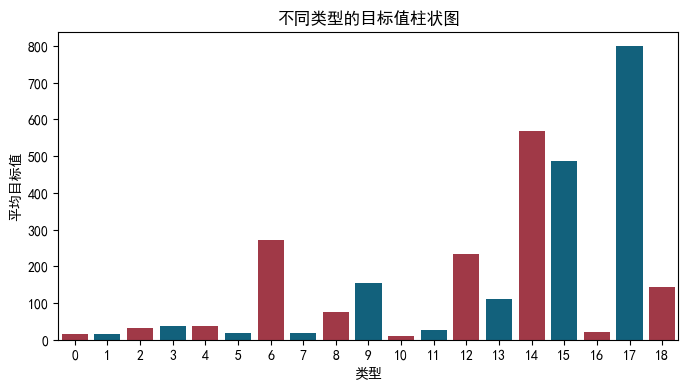
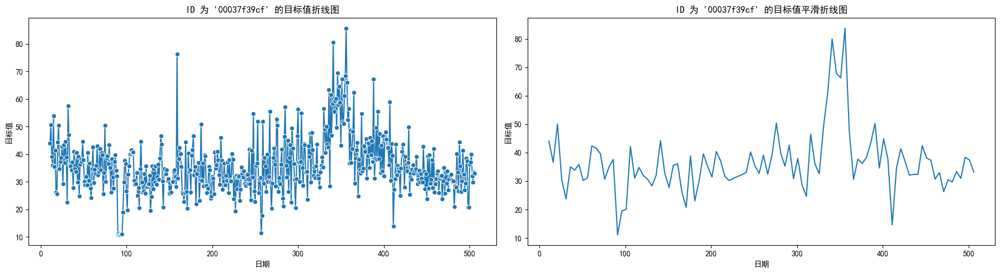
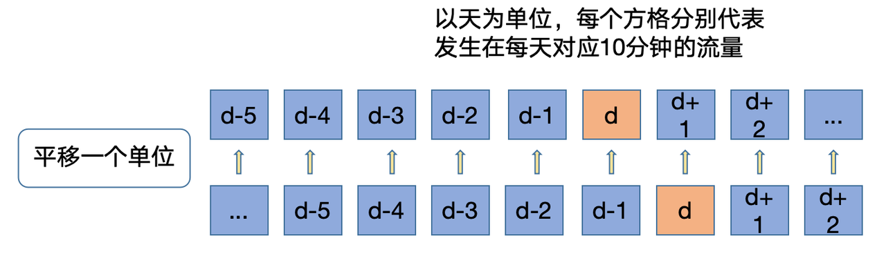
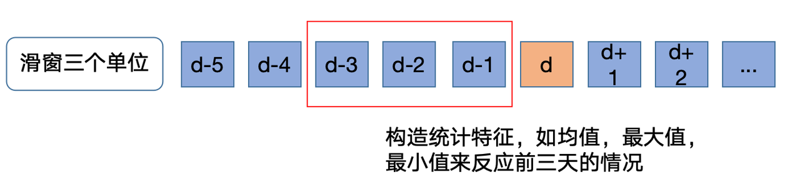
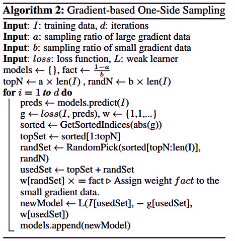

电力需求预测赛
题目
题目链接点这里 ## 赛题背景
随着全球经济的快速发展和城市化进程的加速，电力系统面临着越来越大的挑战。电力需求的准确预测对于电网的稳定运行、能源的有效管理以及可再生能源的整合至关重要。
然而，电力需求受到多种因素的影响，为了提高电力需求预测的准确性和可靠性，推动智能电网和可持续能源系统的发展，本场以“电力需求预测”为赛题的数据算法挑战赛。选手需要根据历史数据构建有效的模型，能够准确的预测未来电力需求。
赛题任务
给定多个房屋对应电力消耗历史N天的相关序列数据等信息，预测房屋对应电力的消耗。
评审规则
数据说明
赛题数据由训练集和测试集组成，为了保证比赛的公平性，将每日日期进行脱敏，用1-N进行标识，即1为数据集最近一天，其中1-10为测试集数据。数据集由字段id（房屋id）、
dt（日标识）、type（房屋类型）、target（实际电力消耗）组成。
\[ \begin{array}{|l|l|} \hline \text { 特征字段 } & \text { 字段描述 } \\ \hline \text { id } & \text { 房屋id } \\ \hline \text { dt } & \text { 日标识 } \\ \hline \text { type } & \text { 房屋类型 } \\ \hline \text { target } & \text { 实际电力消耗，预测目标 } \\ \hline \end{array} \]
评审规则
预测结果以 MES(Mean Square Error) 作为评判标准，具体公式如下： \[ \frac{1}{n} \sum_{n=1}^n\left(y_i-\bar{y}_i\right)^2 \] 其中，\(y_i\) 是真实电力消耗，\(\bar{y}_i\) 是预测电力消耗。
数据下载
| 文件名 | 下载 |
|---|---|
| 电力需求预测挑战赛数据集.zip | 下载文件 |
| 电力需求预测挑战赛提交示例.csv | 下载文件 |
Task 1
baseline 的代码如下：
# 1. 导入需要用到的相关库 |
将 baseline 的结果提交后可得 MSE 得分为：373.89846
接下来我们来分析一下 baseline 代码：
可以看到 baseline 主要通过了如下几个步骤对数据进行处理：
- 导入库：首先，代码导入了需要用到的库，包括 pandas（用于数据处理和分析）。
- 读取数据：代码通过使用 pd.read_csv 函数从文件中读取训练集和测试集数据，并将其存储在 train.csv 和 test.csv 两个数据框中。
- 计算最近时间的用电均值：
- 计算训练数据最近11-20单位时间内对应id的目标均值，可以用来反映最近的用电情况。
- 将用电均值直接作为预测结果：
- 这里使用merge函数根据'id'列将test和target_mean两个DataFrame进行左连接，这意味着测试集的所有行都会保留。
- 保存结果文件到本地：
- 使用to_csv()函数将测试集的'id'、'dt'和'target'列保存为CSV文件，文件名为'submit.csv'。index=None参数表示在保存时不包含行索引。
我们可以看到，上述代码中的选取的是训练数据最近11-20单位时间内对应id的目标均值，那么如果我们选取所有数据再取平均值呢？
train = pd.read_csv('../dataset/train.csv') |
将结果提交后可得 MSE 得分为：629.76628
效果更差了，这是因为这是一个时序预测的题目，当选取所有数据进行预测时，就会导致效果较差，应当选取待预测附近的一些数据进行预测。
Task 2
基础概念
GBDT
GBDT (Gradient Boosting Decision Tree) 是机器学习中一个长盛不衰的模型，其主要思想是利用弱分类器（决策树）迭代训练以得到最优模型，该模型具有训练效果好、不易过拟合等优点。
LightGBM
LightGBM（Light Gradient Boosting Machine）是一个实现GBDT算法的框架，支持高效率的并行训练，并且具有更快的训练速度、更低的内存消耗、更好的准确率、支持分布式可以快速处理海量数据等优点。
在 Task 2 中，我们将使用 LightGBM 模型。
LightGBM
我们先来看代码：
导入模块
import numpy as np |
导入必要的库，包括 numpy、pandas、lightgbm、sklearn 和 matplotlib 等。
设置中文字体，避免出现乱码问题。
设置忽略警告信息，以便代码运行时不显示警告。
读取数据
读取训练数据和测试数据，并存储在 train 和 test 中。
train = pd.read_csv('../dataset/train.csv') |
****************train*****************
id dt type target
0 00037f39cf 11 2 44.050
1 00037f39cf 12 2 50.672
2 00037f39cf 13 2 39.042
3 00037f39cf 14 2 35.900
4 00037f39cf 15 2 53.888
... ... ... ... ...
2877300 fff81139a7 502 5 28.552
2877301 fff81139a7 503 5 22.818
2877302 fff81139a7 504 5 21.282
2877303 fff81139a7 505 5 22.021
2877304 fff81139a7 506 5 18.145
[2877305 rows x 4 columns]
*************test*************
id dt type
0 00037f39cf 1 2
1 00037f39cf 2 2
2 00037f39cf 3 2
3 00037f39cf 4 2
4 00037f39cf 5 2
... ... .. ...
58315 fff81139a7 6 5
58316 fff81139a7 7 5
58317 fff81139a7 8 5
58318 fff81139a7 9 5
58319 fff81139a7 10 5
[58320 rows x 3 columns]数据可视化
柱状图
不同 type 类型对应 target 的柱状图：
type_target_df = train.groupby('type')['target'].mean().reset_index() |

折线图
id 为 00037f39cf 的按dt为序列关于
target 的折线图：
并且由于数据较多，原始折线图并不美观且为了直观的看出
target 的变化趋势，我们对其进行了平滑处理。
UnivariateSpline 是 scipy
库中用于一元函数插值和平滑的工具。其基本思想是通过一个平滑函数来逼近数据点，使得曲线更加平滑，同时尽可能贴合原始数据。
数学原理：
好的，让我们详细解释一下使用 UnivariateSpline
进行平滑处理的原理以及代码中各个参数的作用和计算过程。
平滑处理的原理
UnivariateSpline 是 scipy
库中用于一元函数插值和平滑的工具。
其基本思想是通过一个平滑函数来逼近数据点，使得曲线更加平滑，同时尽可能贴合原始数据。
数学原理
假设我们有一组数据点 \((x_i, y_i)\)，希望找到一个平滑函数 \(s(x)\) 来逼近这些数据点。
UnivariateSpline
使用最小二乘法来找到一个平滑的三次样条函数（cubic
spline），即最小化以下目标函数：
\[ \sum_{i=1}^{n} \left( y_i - s(x_i) \right)^2 + \lambda \int_{a}^{b} \left( s''(x) \right)^2 dx \]
其中： - \(\left( y_i - s(x_i) \right)^2\) 是数据点与平滑曲线之间的误差。 - \(\int_{a}^{b} \left( s''(x) \right)^2 dx\) 是平滑曲线的二阶导数的积分，用于控制曲线的平滑程度。 - \(\lambda\) 是平滑参数，控制拟合的平滑程度。较大的 \(\lambda\) 值会产生更平滑的曲线，但可能会偏离数据点；较小的 \(\lambda\) 值会产生更贴合数据点的曲线，但可能会有较大的波动。
# 筛选特定 id 的数据 |

部分代码解释：
UnivariateSpline(x, y)：创建一个三次样条插值对象，自动选择平滑参数 \(\lambda\)。np.linspace(x.min(), x.max(), 100)：在x的范围内生成 100 个均匀分布的点，用于绘制平滑曲线。spl(xs)：使用三次样条插值对象对新的自变量xs进行插值，得到平滑曲线的因变量ys。
数据预处理
合并和排序数据
合并训练数据和测试数据，并按 id 和 dt
排序。
data = pd.concat([test, train], axis=0, ignore_index=True) |
id dt type target
0 fff81139a7 506 5 18.145
1 fff81139a7 505 5 22.021
2 fff81139a7 504 5 21.282
3 fff81139a7 503 5 22.818
4 fff81139a7 502 5 28.552
... ... ... ... ...
2935620 00037f39cf 5 2 NaN
2935621 00037f39cf 4 2 NaN
2935622 00037f39cf 3 2 NaN
2935623 00037f39cf 2 2 NaN
2935624 00037f39cf 1 2 NaN
[2935625 rows x 4 columns]历史平移
时间序列数据具有趋势和季节性模式。历史平移特征可以帮助模型识别这些模式。
在本题中即电力需求可能具有每日、每周或每月的周期性变化。
并且一般具有时间依赖性，即当前值可能依赖于过去的值。通过引入历史平移特征，模型能够捕捉这种时间依赖性，从而提高预测性能。
进行历史平移（lagging）是时间序列数据处理中一种常见的特征工程方法，特别是在预测任务中。
其主要目的是通过引入过去一段时间的目标值作为特征，帮助模型更好地理解和预测未来的趋势和模式。
假设我们有一个时间序列数据集 \(\{y_t\}\)，其中 \(y_t\) 是时间 \(t\) 的目标值。为了预测未来的目标值 \(y_{t+k}\)（这里 \(k\) 是预测的步长），我们可以引入过去的目标值作为特征。
对于每个时间 \(t\)，生成的历史平移特征可以表示为：
\[ \text{lag}_k(y_t) = y_{t-k} \]
其中，\(\text{lag}_k(y_t)\) 表示第 \(k\) 个滞后的目标值。
例如，对于时间 \(t\) 的目标值 \(y_t\)，引入前 10 到 30 天的历史平移特征可以表示为：
\[ \{ y_{t-10}, y_{t-11}, \ldots, y_{t-30} \} \]
下面对每个 id 进行分组，并生成前 10 到 30 天的 target 平移特征。

for i in range(10,30): |
- 使用
groupby(['id'])对每个 id 进行分组，以处理不同房屋的时间序列数据。 - 使用 shift(i) 生成前 i 天的 target 平移特征。shift(i) 函数会将目标值向下移动 i 个位置，从而生成相应的历史特征。
- 生成的特征命名为
last{i}_target，例如last10_target表示前第 10 天的target值。
窗口统计
生成窗口统计特征是一种常见的特征工程方法，特别适用于时间序列数据。这些特征可以帮助模型捕捉时间序列数据中的短期趋势和变化，从而提高预测性能。
计算前 10 到 12 天的 target 均值，生成窗口统计特征。

data[f'win3_mean_target'] = (data['last10_target'] + data['last11_target'] + data['last12_target']) / 3 |
数据分割
根据 target
是否为空，将数据重新划分为训练集和测试集。
train = data[data.target.notnull()].reset_index(drop=True) |
确定输入特征
排除
id列无预测价值：
id 是房屋的标识，它不包含任何关于目标变量的信息，不具有实际的预测价值。
排除
target列防止数据泄漏：
target列是我们要预测的目标变量。如果在模型训练过程中将target作为输入特征，会导致数据泄漏，模型直接学习目标值，而不是数据中的实际模式和关系。
train_cols = [f for f in data.columns if f not in ['id','target']] |
定义模型训练函数
代码
def time_model(lgb, train_df, test_df, cols): |
在上述代码中：
- 切分训练集和验证集。dt 大于等于 31 作为训练集，小于等于 30 作为验证集。
- 创建 LightGBM 数据矩阵。
- 定义 LightGBM 参数，包括：
\[ \begin{array}{|c|c|} \hline \text { 参数 } & \text { 值 } \\ \hline \text { boosting\_type (提升方法) } & \text { gbdt } \\ \hline \text { objective (目标函数) } & \text { regression } \\ \hline \text { metric (评估指标) } & \text { mse } \\ \hline \text { min\_child\_weight (叶子节点最小权重) } & 5 \\ \hline \text { num\_leaves (叶子节点数) } & 32 \\ \hline \text { lambda\_12 (L2 正则化系数) } & 10 \\ \hline \text { feature\_fraction (特征采样率) } & 0.8 \\ \hline \text { bagging\_fraction (样本采样率) } & 0.8 \\ \hline \text { bagging\_freq (采样频率) } & 4 \\ \hline \text { learning\_rate (学习率) } & 0.05 \\ \hline \text { seed (随机种子) } & 2024 \\ \hline \text { nthread (线程数) } & 16 \\ \hline \text { verbose (输出信息级别) } & -1 \\ \hline \end{array} \]
- 训练模型，并在验证集上进行预测和评估。
参数详解：
- boosting_type
- 含义：指定提升（boosting）的类型。这里使用的是GBDT。
GBDT详解
工作原理
GBDT 通过逐步添加决策树，每一步的新树都是在前一步模型的残差上进行训练的。其核心思想是使用梯度下降法来最小化损失函数。
下面我们来详细地看看 GBDT 的工作原理：
初始化模型
初始化模型 \(F_0(x)\) 是选择一个常数值 \(\gamma\) ，使得损失函数 \(L\) 的和最小化。 \[ F_0(x) = \arg\min_{\gamma} \sum_{i=1}^n L(y_i, \gamma) \] 其中：$ L $ 是损失函数
$ y_i $ 是实际值
$ $ ：
含义：\(\gamma\) 是初始模型的预测值，它是一个常数。
在训练开始时，模型 \(F_0(x)\) 对所有输入 \(x\) 都输出这个常数值 \(\gamma\) 。
来源：\(\gamma\) 的值是通过最小化初始损失函数来确定的。
具体来说， \(\gamma\) 是使损失函数 \(\sum_{i=1}^n L\left(y_i, \gamma\right)\) 最小化的常数。
计算残差
对于每个样本，计算当前模型的残差（也称为负梯度），即目标值和当前模型预测值之间的差异。 \[ r_{i,m} = -\left[ \frac{\partial L(y_i, F(x_i))}{\partial F(x_i)} \right]_{F=F_{m-1}} \] 在平方误差情况下，残差可以简化为： \[ r_{i,m} = y_i - F_{m-1}(x_i) \]拟合新树
用残差作为目标值，训练一个新的决策树 $ h_m(x) \(。\)$ h_m(x) = {h} {i=1}^n (r_{im} - h(x_i))^2 $$更新模型
将新的决策树加入到模型中，更新后的模型为： \[ F_m(x) = F_{m-1}(x) + \gamma_m h_m(x) \] 其中，$ _m $ 是学习率，控制新树对模型的贡献大小。重复步骤 2 到 4
重复上述步骤，直到达到预定的迭代次数或误差满足要求。
损失函数
GBDT 的目标是最小化损失函数 $ L $，常见的损失函数包括：
- 均方误差（MSE）
\[ L(y, \hat{y}) = \frac{1}{2} (y - \hat{y})^2 \]
- 交叉熵损失（分类问题）
\[ L(y, \hat{y}) = -[y \log(\hat{y}) + (1 - y) \log(1 - \hat{y})] \]
梯度下降
在每次迭代中，GBDT 使用梯度下降法来优化模型。对于给定的损失函数 $ L $，梯度的计算方式为：
\[ \frac{\partial L(y_i, F(x_i))}{\partial F(x_i)} \]
这个梯度表示了当前模型的预测与实际值之间的差异。在平方误差情况下，梯度（残差）为：
\[ r_{i,m} = y_i - F_{m-1}(x_i) \]
新树的训练
新的决策树 $ h_m(x) $ 是通过最小化残差的平方和来训练的，即： \[ h_m(x) = \arg\min_{h} \sum_{i=1}^n (r_{i,m} - h(x_i))^2 \]
objective
含义：定义模型的目标函数。这里使用的是回归（regression）。
数学原理：目标函数是均方误差（MSE），即：
\[ \text{MSE} = \frac{1}{n} \sum_{i=1}^n (\hat{y}_i - y_i)^2 \]
metric
- 含义：评估模型性能的指标。这里使用的是均方误差（MSE）。
- 数学原理：评估模型预测值与实际值之间的差异，均方误差的公式如上。
min_child_weight
- 含义：一个叶子节点中最小的样本权重和。
- 数学原理：控制叶子节点的最小 Hessian 和（即二阶导数和），避免叶子节点样本数过少，防止过拟合。
num_leaves
含义：树的最大叶子数。这里设置为 32。
数学原理：叶子数越多，树的复杂度越高，可以捕捉更多的细节，但也可能导致过拟合。叶子数与树的深度 \(d\) 关系为：
\[ \text{num\_leaves} = 2^d \]
lambda_l2
含义：L2 正则化系数（也叫
reg_lambda）。数学原理：增加权重的平方和惩罚项，防止过拟合。正则化项为：
\[ \Omega(f) = \gamma T + \frac{1}{2} \lambda \|w\|^2 \]
其中，\(\lambda\) 为
lambda_l2。
feature_fraction
- 含义：在每次迭代中随机选择的特征比例。这里设置为 0.8。
- 数学原理：每棵树只使用部分特征进行训练，减少过拟合，提高模型的泛化能力。
bagging_fraction
- 含义：在每次迭代中随机选择的样本比例。这里设置为 0.8。
- 数学原理：每次迭代使用部分数据样本进行训练，类似于 Bagging 方法，减少过拟合。
bagging_freq
- 含义：执行 bagging 的频率。这里设置为 4。
- 数学原理：每 4 次迭代进行一次样本的重采样。
learning_rate
含义：学习率，控制每棵树对模型的贡献大小。这里设置为 0.05。
数学原理：较小的学习率可以让模型更平滑地逼近目标函数，但需要更多的树来收敛。更新模型的公式为：
\[ F_m(x) = F_{m-1}(x) + \gamma h_m(x) \]
其中，\(\gamma\) 是学习率。
seed
随机种子，用于重现结果。这里设置为 2024。
设置随机种子可以确保每次运行结果一致，便于我们进行调试和验证模型效果。
nthread
线程数量，控制并行计算的线程数。这里设置为 16，多线程可以加速训练过程。
verbose
控制训练过程的输出信息。设置为 -1 表示不输出详细信息，减少日志信息的输出，提高训练过程的简洁性。
LightGBM
在看完了上述的代码后及其参数后，我们来看一下 LightGBM 的具体原理。
LightGBM 是一种高效的梯度提升决策树实现，旨在提高 GBDT 的训练速度和预测精度。
LightGBM 的关键特性和数学原理：
- 基于叶子节点的增长策略（Leaf-wise Growth）
- 基于直方图的算法（Histogram-based Algorithm）
- 梯度单边采样（Gradient-based One-Side Sampling, GOSS）
- 特征并行和数据并行（Feature and Data Parallelism）
基于叶子节点的增长策略（Leaf-wise Growth）
LightGBM 使用 leaf-wise（基于叶子节点的增长策略）而不是 level-wise（基于层的增长策略），每次选择具有最大增益的叶子节点进行分裂。
增益计算：
\[ \text{Gain} = \frac{1}{2} \left( \frac{G_L^2}{H_L + \lambda} + \frac{G_R^2}{H_R + \lambda} - \frac{(G_L + G_R)^2}{H_L + H_R + \lambda} \right) - \gamma \]
其中：
- $ G_L $ 和 $ G_R $ 分别是左、右子节点的梯度和
- $ H_L $ 和 $ H_R $ 分别是左、右子节点的二阶梯度和
- \(\lambda\) 是 L2 正则化参数
- \(\gamma\) 是叶子节点分裂的惩罚项
- 左子节点梯度和: \(G_L=\sum_{x_i \leq \text { split }} g_i\)
- 右子节点梯度和： \(G_R=\sum_{x_i>\text { split }} g_i\)
- 左子节点二阶梯度和: \(H_L=\sum_{x_i \leq \text { split }} h_i\)
- 右子节点二阶梯度和: \(H_R=\sum_{x_i>\text { split }} h_i\)
基于直方图的算法（Histogram-based Algorithm）
LightGBM 使用直方图算法将连续特征值离散化为有限数量的 bin，大大减少了计算量。每次分裂节点时，LightGBM 会计算所有特征的直方图，然后选择最佳分裂点。
直方图构建以及直方图加速分裂原理：
离散化特征值：
将连续特征值划分为 \(k\) 个 bin，每个 bin 表示一个区间。
- 离散化 (分箱)：将连续特征值 \(x_i\) 转换为离散的 bin 索引 \(b_j\) 。
- 公式: 假设特征值 \(X\) 的范围是 \([a, b]\) ，划分为 \(k\) 个 bin，每个 bin 的宽度为 \(\Delta=\frac{b-a}{k}\) \[ \operatorname{bin}_j=[a+(j-1) \Delta, a+j \Delta) \]
- 分配样本到 bin: 对于每个样本 \(x_i\) ，确定其所属的 bin 索引 \(j\) : \[ j=\left\lfloor\frac{x_i-a}{\Delta}\right\rfloor \]
统计每个 bin 中的样本数量和梯度：
对于每个 $ bin_j $ ，计算其包含的样本数量 \(N_j\) 、样本的一阶梯度和 \(G_j\) 以及二阶梯度和 \(H_j\) 。
样本数量统计： \[ N_j = \sum_{i=1}^{n} \mathbb{I}(x_i \in \text{bin}_j) \] 其中，
$ N_j $ 表示 $ bin_j $ 中样本的数量
\(\mathbb{I}\) 是指示函数，表示样本 $ x_i $ 是否属于 $ bin_j $。即： \[ \mathbb{I}\left(x_i \in \operatorname{bin}_j\right)= \begin{cases}1, & \text { 如果 } x_i \in \operatorname{bin}_j \\ 0, & \text { 如果 } x_i \notin \operatorname{bin}_j\end{cases} \]
梯度和统计： \[ \begin{aligned}G_j & =\sum_{i=1}^n \mathbb{I}\left(x_i \in \operatorname{bin}_j\right) g_i \\H_j & =\sum_{i=1}^n \mathbb{I}\left(x_i \in \operatorname{bin}_j\right) h_i\end{aligned} \] 其中，
- \(G_j\) 表示 $ bin_j $ 的一阶梯度和，\(g_i\) 是样本 \(x_i\) 的一阶梯度
- \(H_j\) 表示 $ bin_j $ 的二阶梯度和，\(h_i\) 是样本 \(x_i\) 的二阶梯度
计算每个分裂点的增益
在计算增益时，我们需要遍历所有可能的分裂点，计算每个分裂点的增益。遍历所有可能的分裂点，计算增益
我们需要遍历所有可能的分裂点，计算每个分裂点的增益，并选择增益最大的分裂点作为最佳分裂点。初始化增益和最佳分裂点：
best_gain \(=-\infty\)
best_split \(=\) None遍历所有分裂点：
对于每个可能的分裂点，计算其增益，并更新最佳增益和最佳分裂点。 for each split point \(s_j\) : \[ \begin{aligned} for\ & each\ split\ point\ s_j:\\ & G_L =\sum_{x_i \leq s_j} g_i \\ & H_L =\sum_{x_i \leq s_j} h_i \\ & G_R =\sum_{x_i>s_j} g_i \\ & H_R =\sum_{x_i>s_j} h_i \end{aligned} \]
计算增益并更新最佳增益和最佳分裂点： \[ \begin{aligned} if\ G & ain\_j\ >\ best\_gain\ :\\ & best\_gain\ =\ Gain_j\\ & best\_split\ =\ s_j \end{aligned} \]
选择最佳分裂点
最终，选择具有最大增益的分裂点作为最佳分裂点。
最佳分裂点 = best_split
最佳增益 = best_gain
梯度单边采样（GOSS）
GOSS 通过保持大梯度的数据点，随机采样小梯度的数据点来减少计算量，同时保持模型的准确性。
大梯度样本保留：
保留那些具有较大梯度的样本，因为这些样本对提升的损失函数贡献最大。小梯度样本采样：
随机采样那些具有较小梯度的样本，减少计算量，并通过对小梯度样本赋予更大的权重来平衡样本分布。
GOSS 的步骤
 >GOSS 伪代码，引自Lightgbm基本原理介绍
假设我们有一个样本 \(\left\{\left(x_i, y_i\right)\right\}_{i=1}^n\) ，其梯度为 \(\left\{g_i\right\}_{i=1}^n\) 。
以下是 GOSS 的具体步骤:
计算每个样本的梯度:
- 对于每个样本 \(i\) ，计算其梯度 \(g_i\) : \[ g_i=\frac{\partial L\left(y_i, \hat{y}_i\right)}{\partial \hat{y}_i} \] 其中， \(L\) 是损失函数， \(y_i\) 是实际值， \(\hat{y}_i\) 是预测值。
排序样本梯度:
- 将样本按梯度的绝对值 \(\left|g_i\right|\) 从大到小排序。
选择大梯度样本:
- 选择前 \(a \cdot n\) 个梯度较大的样本，其中 \(a\) 是一个比例参数。
随机采样小梯度样本:
- 从剩余的 \((1-a) \cdot n\) 个样本中随机选择 \(b \cdot n\) 个梯度较小的样本，其中 \(b\) 也是一个比例参数。
调整小梯度样本的权重:
- 为了平衡样本分布，对小梯度样本的梯度进行放大，放大系数为 \(\frac{1-a}{b}\) 。
特征并行和数据并行
LightGBM 支持特征并行和数据并行，通过多线程和分布式计算进一步加速训练过程。
训练和预测并保存结果
使用 time_model 函数训练模型，并进行验证和测试集预测。
train_cv = train |
184.6440690468036将测试集预测结果保存到 submit.csv 文件中。
test['target'] = lgb_test |
提交结果，可以看到得分为：259.9667
相对于 Task 1 有较大的提升。
超参数优化
import numpy as np |
def time_model_gc(train_df, test_df, cols): |
train = train_cv |
开始网格搜索...
Fitting 5 folds for each of 1296 candidates, totalling 6480 fits# 保存验证集预测结果 |